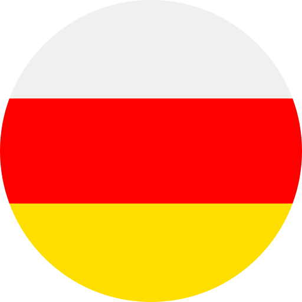

Karacars — это современная компания, которая внесла значительный вклад в развитие индустрии каршеринга. Основанная в начале 2024 года командой энтузиастов, Karacars появилась на фоне растущего интереса к устойчивым транспортным решениям и совместному использованию автомобилей. Основатели компании стремились создать доступный и удобный сервис, который бы соответствовал потребностям городских жителей, желающих оптимизировать свои транспортные расходы.
Первые шаги Karacars были связаны с тщательным исследованием рынка и потребностей пользователей. Команда провела множество опросов и изучила зарубежные практики каршеринга, чтобы понять, как сделать свою платформу максимально удобной. В конце 2023 году компания запустила свой первый сервис в крупном городе, предлагая клиентам инновационное мобильное приложение для быстрого бронирования автомобилей.
С самого начала Karacars сосредоточилась на создании безопасной и эффективной экосистемы для пользователей. Быстрое развитие технологий позволило компании внедрить систему бесключевого доступа к автомобилям, что сделало аренду автомобиля быстрее и удобнее. Вскоре Karacars зарекомендовала себя как надежный сервис, предлагающий своим клиентам широкий выбор автомобилей разных классов и категорий.
Нарастающая популярность Karacars привела к расширению услуг компании не только в крупных городах, но и в пригородах. В 2025 году Karacars начнет активно развивать сотрудничество с местными властями и партнерами, что позволит значительно увеличить количество доступных автомобилей и станций в разных районах.
Компания продолжает развиваться, внедряя новые технологии, такие как электромобили, и улучшая сервис для пользователей. Karacars нацелена на устойчивый рост, сочетая удобство использования, доступность и заботу о экологии, что обеспечивает ей конкурентное преимущество на рынке каршеринга.
10,000+ клиентов по всей россии
Скидка на первый заказ 5%
Автопарк на 32 различных авто